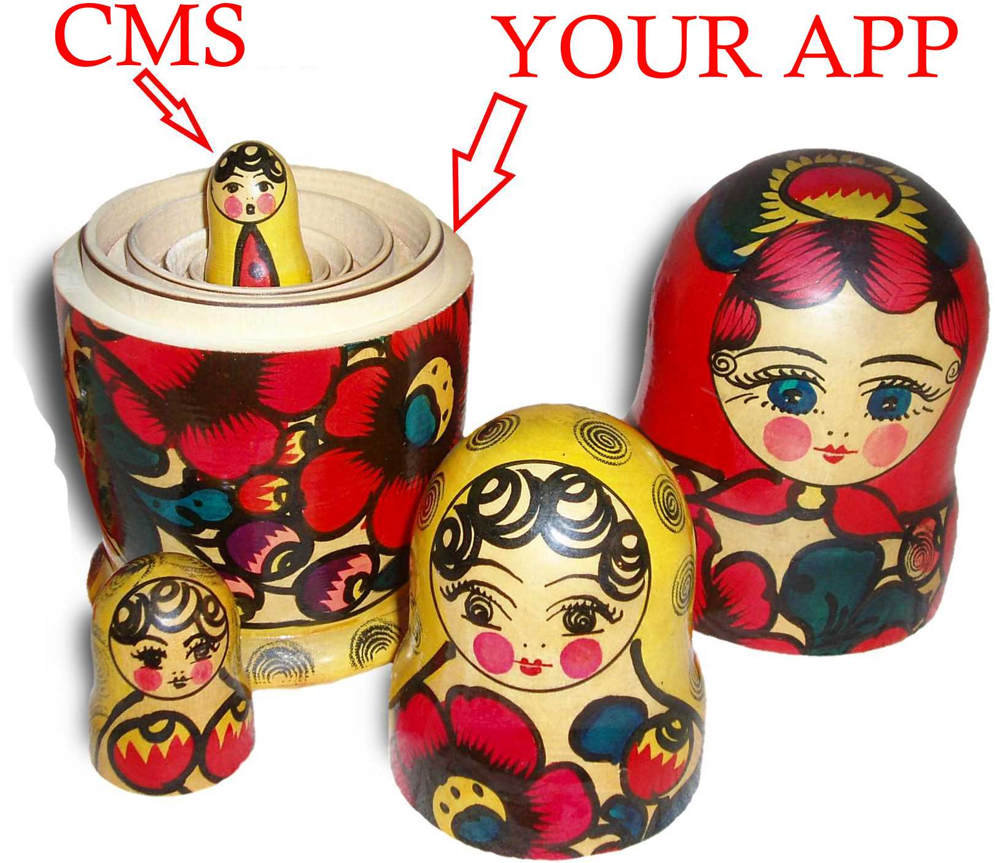

Building applications inside of a content management system is now a failed experiment. A new style of api-first, headless content management systems inverts the relationship and provides a pleasant and productive development process.

The Benefits of App-In-CMS
The appeal of building an application inside of a CMS is that you get stuff for free. We greedy software developers cannot resist pre-built authentication, security, widgets and of course content management. For very simple, short-lived applications where control over the output or quality engineering are not important then app-in-cms may be OK.
Hosting a custom application inside of a CMS is a terrible idea
The old idea about how to merge user editable content into custom applications was to build applications inside of content management systems. Early productivity advantages (such as built-in user management and authentication) are soon overtaken by compromises required to stay within the CMS framework and challenges related to versioning and deployment. Architectural and functional compromises soon leak out and affect the user. It is common to get three months into a CMS-based application development project only to realise that it should have been a standalone application and that the CMS framework is now a liability. When designing and building software applications we should try to avoid such architectural dead ends.
The biggest problem with app-in-cms is that the application developer surrenders control of the application. The CMS is a framework that you must work within and this leads to hacks, compromise and compounding technical debt.
Confessions of an app-in-cms developer
I know that app-in-cms is a bad idea, because I have done it, and seen it done. For me, this was DotNetNuke. I have seen the same experiment repeated with Sharepoint, Sitefinity, Kentico and Umbraco. The result is a predictable, rapid accumulation of unresolvable technical debt.
Years after my last DotNetNuke project I worked on a large ecommerce application. Because it was a business to consumer ecommerce application, marketing was a primary concern, and that means that the ability to manage content was essential. The problem was solved by reserving fixed banner ads throughout the site. When the marketing team wished to modify content they would create new banner ads of the prescribed dimensions and upload them to the site. When the user’s cache expired they would receive the new banner ad with its new content. This process was labour intensive, horribly inflexible and bad for users who were subjected to too much tiny, low resolution text in banner ad images. The landing page of the site, and some associated content pages, were served from a CMS system. When the user started an ecommerce process they transitioned into a custom application that had to be synchronized to the CMS front-end so that the transition was not obvious to the user. What a mess.
More recently I was involved in another business-to-consumer project that required content managemed by the marketing department. After investigating possible integration with a content management system the team decided to instead build their own micro CMS features into the application so that application administrators could modify certain pieces of content. This is a better solution than replaceable banner ads but it is still inflexible and costly, having consumed some $10k of the project’s budget.
Hopefully I have given sufficient examples to demonstrate that content management within custom applications is a common problem, and the traditional app-in-cms is not the answer.
The headless CMS solution
A headless CMS looks after managing content and delivers it via an API. The CMS is not your application, it is not responsible for rendering pages, it simply makes content available. It has no templates, themes or views. It has only content with metadata, a way to get that content, and a way to maintain that content. For example, here is a simple request made to a headless CMS for all content tagged index-page. Note that the response (lower right) is an array of JSON data containing the content:
Within a custom application you then have the responsibility of transforming the json content into an acceptable view. But now application administrators have the ability to maintain content without affecting the development team.
For custom applications, a headless CMS is a much better solution than the traditional full CMS.
This inverts the APP <-> CMS relationship, putting the application back in charge, with embedded CMS content.

Summary
An api-first, headless CMS is a good choice for adding managed content to web applications, and many web applications, especially those that are public facing, would benefit from managed content. The alternative, building an application inside of a CMS platform, leads to hacks, compromise and compounding technical debt.